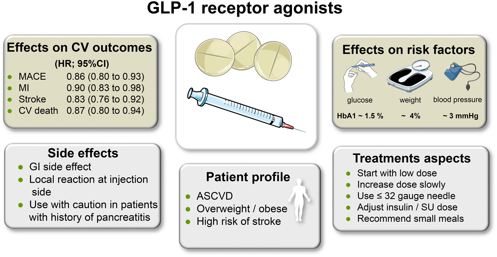

GLP-1 Receptor Agonists
GLP1 agonists are diabetes medications with growing applications in cardiovascular disease, bariatric medicine. GLP-1 RA were initially developed as glucose-lowering drugs because activation of the GLP-1 receptor by these agents leads to a reduction in blood glucose and an improvement in postprandial glucose metabolism. By stimulating GLP-1R in hypothalamic neurons, GLP-1 RA additionally induce satiety and lead to weight loss. In contrast with GLP-1 RA, DPP4 inhibitors did not reduce MACE in large CVOTs.

CV Outcomes of GLP-1 RA
| Drug | Trial (Year) |
|---|---|
| Lixisenatide | ELIXA |
| Liraglutide | LEADER |
| Semaglutide | SUSTAIN 6 |
| Exenatide | EXSCEL |
| Albiglutide | HARMONY OUTCOMES |
| Dulaglutide | REWIND |
| Semaglutide | PIONEER-6 |
| Efpeglenatide | AMPLITUDE-O |
A meta-analysis of these 8 CVOTs revealed a 14% reduction in the primary outcome of the 3-component MACE (cardiovascular death, nonfatal MI, and nonfatal stroke; number needed to treat, 65), with moderate heterogeneity. These results improve to a 15% reduction in MACE with low heterogeneity (14.9%) after removal of the ELIXA trial.
| Main analysis with all 8 CVOTs (HR; I2) | Sensitivity analyses minus ELIXA (HR; I2) | |
|---|---|---|
| MACE | 0.86 (0.80 to 0.93) 45% | 0.85 (0.80 to 0.90) 15% |
| CV death | 0.87 (0.80 to 0.94) 13% | 0.85 (0.78 to 0.93) 12% |
| MI | 0.90 (0.83 to 0.98) 27% | 0.88 (0.81 to 0.96) 16% |
| All-cause mortality | 0.88 (0.82 to 0.94) 10% | 0.87 (0.81 to 0.94) 17% |
| Incident HHF | 0.89 (0.82 to 0.98) 3% | 0.88 (0.79 to 0.98) 12% |
| Kidney composite (+ albuminuria) | 0.79 (0.73 to 0.87) 48% | 0.78 (0.71 to 0.87) 57% |
| Worsening kidney function (eGFR) | 0.86 (0.72 to 1.02) 43% | 0.82 (0.69 to 0.98) 40% |
Mechanisms of MACE Outcomes
- GLP-1 RA lead to a reduction in systolic blood pressure of 2 to 6 mm Hg
- GLP-1 RA have been shown to modestly reduce total cholesterol, LDL cholesterol, and triglycerides
- GLP-1 RA lead to a reduction of HbA1c between 0.8% and 1.5%.
- GLP-1 RA lead to a modest reduction in weight between 2.5 and 4 kg
Note
GLP-1 RA mainly reduce ASCVD-associated outcomes such as MI, stroke, and cardiovascular death.
Kidney Outcomes of GLP-1 RA
Various GLP-1 RA have been shown to reduce albuminuria/ progression of albuminuria, an established surrogate parameter for worsening kidney function, and a meta-analysis of GLP-1 RA CVOTs suggests that a combined kidney outcome that includes progression of albuminuria was reduced by 21% to 22%.
Based on the LEADER and SUSTAIN-6 trials, semaglutide and liraglutide may have renal-protective effects especially in patients with pre-existing CKD.
The FLOW trial is currently examining weekly semaglutide in patients with CKD.
Obesity Outcomes of GLP-1 RA
Semaglutide, liraglutide are approved for use in obesity.
| Drug | Trial | Effect | Note |
|---|---|---|---|
| Semaglutide | STEP 1, STEP 2, STEP 8 | weight loss in individuals considered overweight or with obesity, with or without diabetes. | Once-weekly SC injection +/- DM2 |
| Liraglutide | SCALE | weight loss in individuals considered overweight or with obesity, with or without diabetes. | Once-daily SC injection. +/- DM2 |
| Tirzepatide (novel GLP-1 and GIP receptor agonist) | SURMOUNT-2 | weight loss in obesity +/- DM2, greater effect than semaglutide and placebo | |
| # Guideline Recommendations for GLP-1 RA | |||
| 1. The 2019 European Society of Cardiology guidelines on diabetes, prediabetes, and CVD recommend treatment with GLP-1 RA (or SGLT2i) in patients with T2D and atherosclerotic cardiovascular disease (ASCVD) or high/very high risk (high-risk patients, diabetes duration ≥10 years without target organ damage plus any other additional risk factor; very high–risk patients, diabetes and established CVD, evidence of target organ damage [proteinuria, eGFR <30 mL/min/1.73 m2, left ventricular hypertrophy, or retinopathy], 3 or more major risk factors, or early-onset type 1 diabetes [of long duration [>20 years]) to reduce cardiovascular events.] | |||
| 2. 2020 report of the American College of Cardiology Solution Set Oversight Committee on novel therapies for cardiovascular risk reduction in patients with T2D recommends initiating a patient-clinician discussion about the use of an SGLT2i and/or a GLP-1 RA with demonstrated cardiovascular benefit for patients with T2D who have or who are at very high risk for clinical atherosclerotic cardiovascular disease, HF, and/or diabetic kidney disease | |||
| 3. 2022 American Diabetes Association “Standards of Medical Care in Diabetes” recommend treatment with GLP-1 RA or SGLT2i in T2D with ASCVD or high risk (such as patients ≥55 years of age with coronary, carotid, or lower-extremity artery stenosis >50% or left ventricular hypertrophy), independently of baseline HbA1c, individualized HbA1c target, or metformin use | |||
| # Summary | |||
| In general, GLP-1 RA are indicated for those patients who: |
- Have DM2, and:
- Established ASCVD
- High-risk to very-high-risk for ASCVD
- Duration of DM2 > 10 years
- Proteinuria, eGFR < 30
- LVH
- Retinopathy
- Heart failure
- Carotid or peripheral arterial disease > 50%
- Obese (in conjunction with lifestyles changes and consideration for bariatric surgery)
- BMI >= 30
- BMI >= 27 with adiposity-related complications (see Obesity)
- BMI >= 27 with DM2
References
- GLP-1 Receptor Agonists for the Reduction of Atherosclerotic Cardiovascular Risk in Patients With Type 2 Diabetes | Circulation
- Obesity in adults: Drug therapy - UpToDate
- Pharmacotherapy in Obesity Management - Obesity Canada